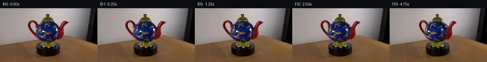

![首帧]()

Round 00
2026-11-05T09:31:37.091275+00:00像素候选变化代码 +269/−0inspection 更新
pixels b6c01e132e8dd85f · code 9faa4d674afea3f0
查看本轮 generate.py 真实 diff
--- previous/generate.py +++ current/generate.py @@ -0,0 +1,269 @@ +#!/usr/bin/env python3 +"""Generate a slow clockwise teapot rotation from the supplied first frame. + +The script uses only deterministic local pixel operations. It segments the +foreground with a tightly seeded GrabCut mask, separates the approximately +axisymmetric vessel from its lateral appendages, remaps the decorated vessel +over a curved surface, and applies perspective foreshortening to the handle +and spout. No external assets or models are used. +""" + +from pathlib import Path + +import cv2 +import numpy as np +from PIL import Image, ImageDraw + +from artifact_io import save + + +ROOT = Path(__file__).resolve().parent +W, H = 256, 144 +CX = 127.5 +N_FRAMES = 20 +TOTAL_YAW_DEG = 22.0 + + +def ellipse_mask(shape, center, axes): + out = np.zeros(shape, np.uint8) + cv2.ellipse(out, center, axes, 0, 0, 360, 255, -1, cv2.LINE_AA) + return out + + +def segment_teapot(rgb): + """Return a conservative hard mask for teapot, lid, feet, handle, spout.""" + bgr = cv2.cvtColor(rgb, cv2.COLOR_RGB2BGR) + gc = np.full((H, W), cv2.GC_BGD, np.uint8) + + # Everything relevant is within this compact box. Background within the + # box remains probable background so the handle hole and gaps survive. + gc[11:108, 69:184] = cv2.GC_PR_BGD + + probable = np.zeros((H, W), np.uint8) + cv2.ellipse(probable, (127, 63), (35, 33), 0, 0, 360, 255, -1) + cv2.ellipse(probable, (127, 35), (28, 9), 0, 0, 360, 255, -1) + cv2.rectangle(probable, (116, 20), (137, 36), 255, -1) + cv2.ellipse(probable, (126, 20), (9, 6), 0, 0, 360, 255, -1) + + handle_path = np.array( + [[104, 39], [92, 33], [81, 34], [75, 40], [76, 49], + [83, 57], [94, 69], [103, 70]], np.int32 + ) + cv2.polylines(probable, [handle_path], False, 255, 9, cv2.LINE_AA) + + spout_shape = np.array( + [[151, 47], [160, 43], [163, 38], [171, 34], [180, 36], + [171, 42], [167, 48], [164, 64], [155, 75], [151, 72]], + np.int32, + ) + cv2.fillPoly(probable, [spout_shape], 255) + cv2.ellipse(probable, (128, 94), (27, 12), 0, 0, 360, 255, -1) + gc[probable > 0] = cv2.GC_PR_FGD + + # Narrow unambiguous foreground seeds keep slender glossy parts connected. + sure = np.zeros((H, W), np.uint8) + cv2.ellipse(sure, (127, 63), (27, 26), 0, 0, 360, 255, -1) + cv2.ellipse(sure, (127, 35), (18, 4), 0, 0, 360, 255, -1) + cv2.circle(sure, (126, 19), 3, 255, -1) + cv2.polylines(sure, [handle_path], False, 255, 3, cv2.LINE_AA) + spout_core = np.array( + [[155, 49], [162, 44], [165, 39], [173, 37], + [168, 42], [164, 49], [161, 63], [155, 70]], np.int32 + ) + cv2.fillPoly(sure, [spout_core], 255) + cv2.ellipse(sure, (128, 94), (20, 6), 0, 0, 360, 255, -1) + gc[sure > 0] = cv2.GC_FGD + + bg_model = np.zeros((1, 65), np.float64) + fg_model = np.zeros((1, 65), np.float64) + cv2.grabCut(bgr, gc, None, bg_model, fg_model, 8, cv2.GC_INIT_WITH_MASK) + hard = np.isin(gc, (cv2.GC_FGD, cv2.GC_PR_FGD)).astype(np.uint8) + + # Keep only the one connected assembly containing the vessel center. + _, labels, stats, _ = cv2.connectedComponentsWithStats(hard, 8) + label = int(labels[63, 127]) + if label == 0: + label = 1 + int(np.argmax(stats[1:, cv2.CC_STAT_AREA])) + hard = (labels == label).astype(np.uint8) … diff truncated; 182 more lines …